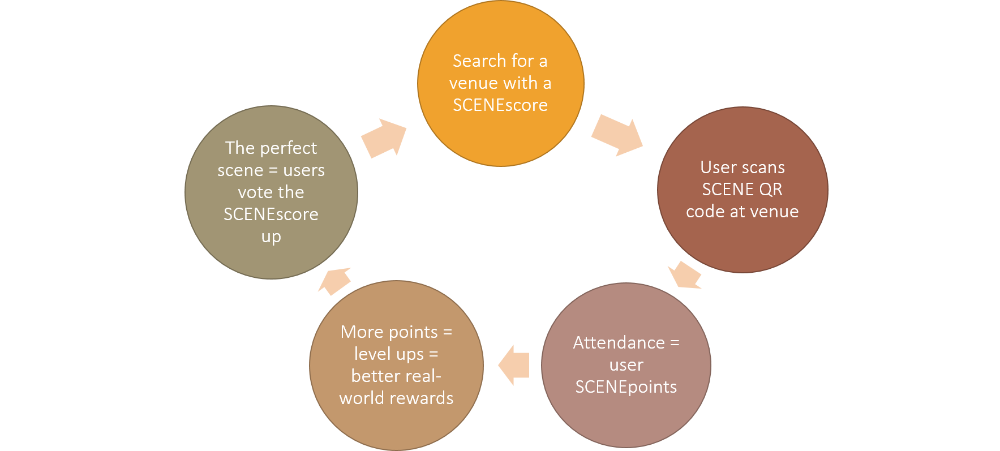
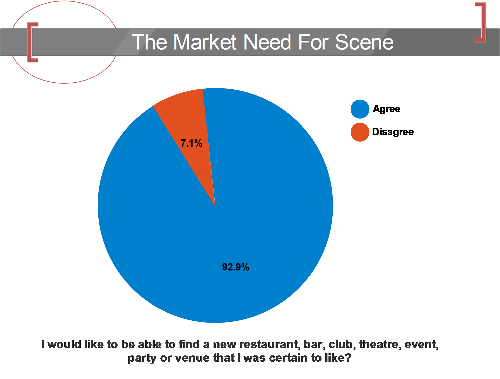

The Social App For Gigs, Restaurants, Parties & More!
Created by Group 2
Video
How does SCENE work?



Competition
- Foursquare and Socialeyes have/had points system
- Poor reaction when Foursquare removed them
Buisness Model
- Advertisement and Promotion,
Affiliate. -
The ultimate social database
- Interests based on age, gender, ethnicity, “their Scene".
- Excellent marketing opportunities
- Target Audience
- 18+
- 12+ in a future release